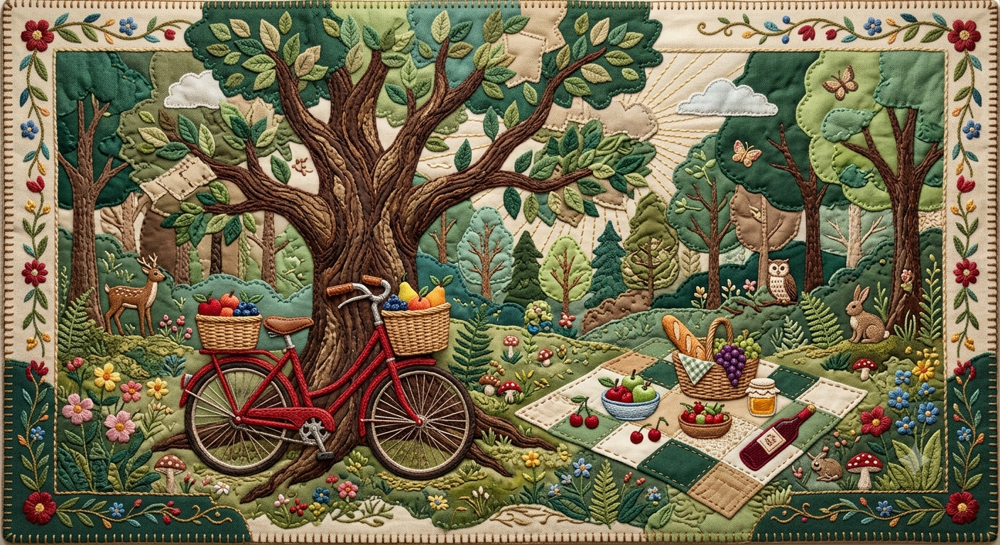

Reconectar-se com a terra nas grandes cidades tornou-se um ato de resistência urbana. O cultivo doméstico vai além da estética: é uma ferramenta direta contra o estresse moderno, a superexposição às telas e a alienação alimentar das grandes metrópoles.
O projeto O Broto desmistifica a botânica e a horticultura, provando que 'ter dedo verde' é uma prática acessível de observação e paciência. Aqui, a planta não é mero objeto de decoração, mas parte viva de um ecossistema sustentável dentro de casa.